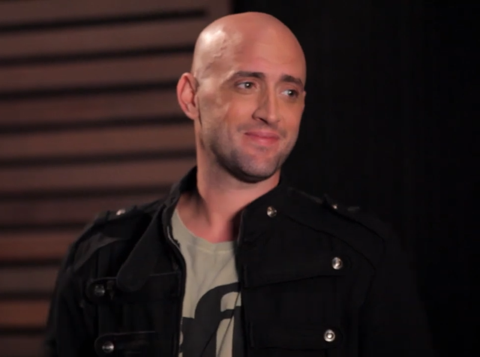

Paulo Gustavo
Ator, humorista, diretor, roteirista e apresentador brasileiro.

- Nascimento 30 de outubro de 1978.
Niterói, Rio de Janeiro
- Estudou no tradicional Colégio Salesiano durante o ensino fundamental.
- Assumidamente bissexual desde sua adolescência, casou-se em 20 de dezembro de 2015
com o dermatologista
Thales Bretas.
- Em 18 de agosto de 2019, em uma postagem em seu Instagram, ele anunciou o nascimento dos
filhos do casal,
chamados Romeu e Gael, de barrigas de aluguel diferentes.
Criado por Carolina Lima